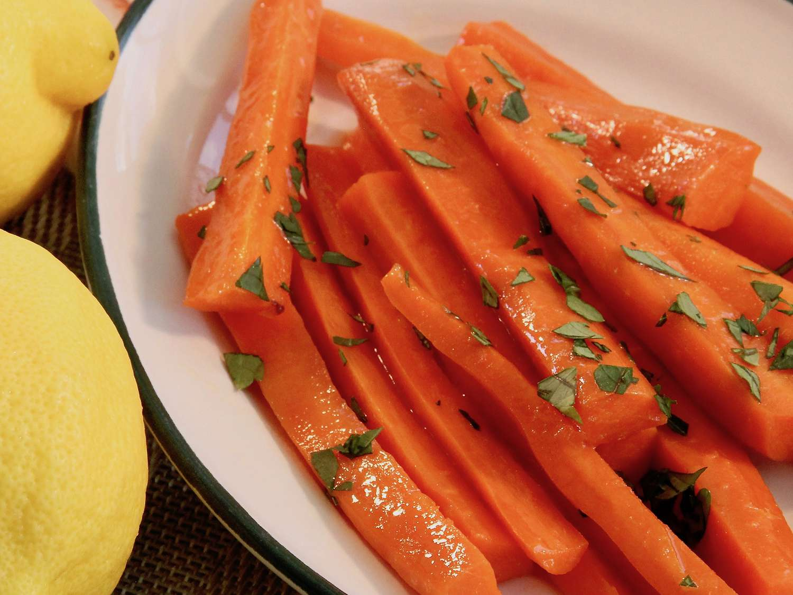

Odin Recipes: Lemon Glazed Carrots Recipe
Back to Homepage
Lemon Glazed Carrots Recipe

Description
These honey-glazed carrots are cooked in a honey, butter, ginger, and lemon glaze. The recipe goes really well with peppercorn steak and cheesecake.
Ingredients
- Carrots
- Butter
- Brown Sugar
- Lemon Juice
- Ground Black Pepper
Steps
- Place carrots into a large pot and cover with water; bring to a boil. Reduce heat to medium-low and simmer until carrots are tender, about 8 minutes. Drain.
- Heat butter in a skillet over medium heat; cook and stir carrots, brown sugar, and lemon juice in the melted butter, stirring often, until sugar has dissolved, 2 minutes.
- Serve and enjoy!
More Recipes!